Tutorial
Understanding and expanding Python: hand-on experience with the Python internals
Cristián
maureira.dev
@cmaureir


The Structure
of this tutorial
- üßë‚Äçüè´ The tutorial has two parts
- üñµ Each part will have a short presentation
- üèÉ‚Äç‚û°Ô∏è A set of excercises follows each presentation
- ⭐ Some excercises have optional follow-ups
First Part Presentation
Navigating cpython


CPython is the standard implementation
To get around it
We need to understand C
a little bit
Python and C (1/3)
# A comment
import my_module
def add(a: int, b: float) -> float:
return a + b
def main():
msg: str = "Hello World"
x: int = 3
y: float = 0.14
z: float = add(x, y)
print("%f" % z)
if __name__ == "__main__":
main()
// A comment
#include <my_module.h>
float add(int a, float b) {
return a + b;
}
int main(){
char msg[] = "Hello World";
int x = 3;
float y = 0.14;
float z = add(x, y);
printf("%f", z)
return 0;
}
Python and C (2/3)
l = [1, 2, 3, 4, 5]
l2 = []
l2.append(42)
l2.append(17)
l2.append("Hallo")
int a[] = {1, 2, 3, 4, 5};
int *a2 = malloc(3 * sizeof(int));
a2[0] = 42;
a2[1] = 17
a2[2] = "Hallo" // BOOM! üî•
// Don't forget to free
// the memory you allocated
free(a2);
Python and C (3/3)
typedef struct {
size_t size;
int *data;
} int_vector;
int *create_vector(size_t n) {
return malloc(n * sizeof(int));
}
void set_vector(int_vector *v,
size_t n, int x) {
if(v) {
if(n >= v->size) {
resize_vector(v, n);
}
v->data[n] = x;
}
}
// Yay, we got "kind of" a vector
int_vector *v = create_vector(10);
set_vector(v, 0, 123);
- We might need to reinvent the wheel
*
int *a;
C pointers (1/2)
C pointers (1/2)

The cpython repo structure
- Doc - Official documentation
- Include - Interpreter header files
- Lib - stdlib in pure Python
- Modules - stdlib in C
- Objects - built-in types
- Python - CPython runtime
PyObject
typedef struct _object {
_PyObject_HEAD_EXTRA
Py_ssize_t ob_refcnt;
struct _typeobject *ob_type;
} PyObject;
typedef struct _typeobject {
PyObject_VAR_HEAD
const char *tp_name; /* For printing, in format "." */
Py_ssize_t tp_basicsize, tp_itemsize; /* For allocation */
/* Methods to implement standard operations */
destructor tp_dealloc;
Py_ssize_t tp_vectorcall_offset;
getattrfunc tp_getattr;
setattrfunc tp_setattr;
PyAsyncMethods *tp_as_async; /* formerly known as tp_compare (Python 2)
or tp_reserved (Python 3) */
reprfunc tp_repr;
/* Method suites for standard classes */
PyNumberMethods *tp_as_number;
PySequenceMethods *tp_as_sequence;
PyMappingMethods *tp_as_mapping;
/* More standard operations (here for binary compatibility) */
hashfunc tp_hash;
ternaryfunc tp_call;
reprfunc tp_str;
getattrofunc tp_getattro;
setattrofunc tp_setattro;
/* Functions to access object as input/output buffer */
PyBufferProcs *tp_as_buffer;
/* Flags to define presence of optional/expanded features */
unsigned long tp_flags;
const char *tp_doc; /* Documentation string */
/* Assigned meaning in release 2.0 */
/* call function for all accessible objects */
traverseproc tp_traverse;
/* delete references to contained objects */
inquiry tp_clear;
/* Assigned meaning in release 2.1 */
/* rich comparisons */
richcmpfunc tp_richcompare;
/* weak reference enabler */
Py_ssize_t tp_weaklistoffset;
/* Iterators */
getiterfunc tp_iter;
iternextfunc tp_iternext;
/* Attribute descriptor and subclassing stuff */
struct PyMethodDef *tp_methods;
struct PyMemberDef *tp_members;
struct PyGetSetDef *tp_getset;
struct _typeobject *tp_base;
PyObject *tp_dict;
descrgetfunc tp_descr_get;
descrsetfunc tp_descr_set;
Py_ssize_t tp_dictoffset;
initproc tp_init;
allocfunc tp_alloc;
newfunc tp_new;
freefunc tp_free; /* Low-level free-memory routine */
inquiry tp_is_gc; /* For PyObject_IS_GC */
PyObject *tp_bases;
PyObject *tp_mro; /* method resolution order */
PyObject *tp_cache;
PyObject *tp_subclasses;
PyObject *tp_weaklist;
destructor tp_del;
/* Type attribute cache version tag. Added in version 2.6 */
unsigned int tp_version_tag;
destructor tp_finalize;
vectorcallfunc tp_vectorcall;
/* bpo-37250: kept for backwards compatibility in CPython 3.8 only */
Py_DEPRECATED(3.8) int (*tp_print)(PyObject *, FILE *, int);
#ifdef COUNT_ALLOCS
/* these must be last and never explicitly initialized */
Py_ssize_t tp_allocs;
Py_ssize_t tp_frees;
Py_ssize_t tp_maxalloc;
struct _typeobject *tp_prev;
struct _typeobject *tp_next;
#endif
} PyTypeObject;
/* The *real* layout of a type object when allocated on the heap */
typedef struct _heaptypeobject {
/* Note: there's a dependency on the order of these members
in slotptr() in typeobject.c . */
PyTypeObject ht_type;
PyAsyncMethods as_async;
PyNumberMethods as_number;
PyMappingMethods as_mapping;
PySequenceMethods as_sequence; /* as_sequence comes after as_mapping,
so that the mapping wins when both
the mapping and the sequence define
a given operator (e.g. __getitem__).
see add_operators() in typeobject.c . */
PyBufferProcs as_buffer;
PyObject *ht_name, *ht_slots, *ht_qualname;
struct _dictkeysobject *ht_cached_keys;
/* here are optional user slots, followed by the members. */
} PyHeapTypeObject;
Python C-API
Strings
docs.python.org/3/c-api/unicode.html
char msg[] = "Hello World!";
PyObject *s = PyUnicode_FromString(msg);
...
Py_ssize_t = PyUnicode_GetLength(s);
Lists
docs.python.org/3/c-api/unicode.html
char msg[] = "Hello World!";
PyObject *s = PyUnicode_FromString(msg);
PyObject *l = PyList_New(0);
PyList_Append(l, s);
...
Check what's the PyObject storing
int PyUnicode_Check(PyObject *o);
int PyList_Check(PyObject *o);
int PyDict_Check(PyObject *o);
int PyFloat_Check(PyObject *o);
int PyTuple_Check(PyObject *o);
Parse arguments
static PyObject* glob(PyObject* self, PyObject* args,
PyObject* kwds){
const char *kwlist[] = {"directory", "recursive", 0};
const char *directory = nullptr;
const int *recursive = nullptr;
if (!PyArg_ParseTupleAndKeywords(args, kwds,
"z|p",
const_cast<char **>(kwlist),
&directory,
&recursive)) {
return nullptr;
}
...
Creating a list from C
TODOHow does CPython works?
From Python to Machine Code
Bytecode
➡️
Specialized
Bytecode
Bytecode
➡️
Micro-Op
traces
traces
➡️
Optimized
Micro-Op
traces
Micro-Op
traces
Brandt Bucher: Building a JIT compiler for CPython (PyCon US 2024)
End of First Part Presentation
Navigating cpython
Compiler Setup
- Linux:
gcc - macOS:
clang(via XCode) - Windows:
cl(via MSVC2022)
Enviroment Setup
- Terminal (command-line)
- Preferable Linux or macOS
- Optional: configure your favorite IDE
Excercise 00
Compile a "Hello, World!" example in C
Excercise 01
Build cpython
Excercise 01 - Build cpython
More info: devguide.python.org/getting-started/setup-building/
For Linux/macOS
cd cpython
./configure
make -j16 # or more
./python
For Windows
cd cpython
PCBuild\build.bat
PCbuild\amd64\python_d.exe
Excercise 02
Add a Python function to cpython
Excercise 02 - New Python function in cpython
- Pick your favorite Python module (Lib/)
- Add a new function (maybe based on an existing one)
- Change parameters defaults
- Remove parameters
- Add new functionality
- Recompile cpython and try it out!
Excercise 03
Add a new built-in function to cpython
Excercise 03 - New C function in cpython
- Consider functionality you know, and change it
- For example: pdir() like dir() but for non_dunder attributes.
Excercise 04
Add a new method to a Python container
Excercise 05
Add an alias to a Python keyword
Second Part Presentation
Extending cpython
Creating a Python C-extension
Parts of a C extension (1/4)
static PyObject* hello(PyObject* self, PyObject* args) {
char *msg = "Hey there PyCon Portugal!";
return Py_BuildValue("s", msg);
}
static PyMethodDef the_methods[] = {
{"hello", (PyCFunction)hello, METH_NOARGS, NULL},
{NULL, NULL, 0, NULL}
};
Parts of a C extension (2/4)
static struct PyModuleDef module = {
.m_base = PyModuleDef_HEAD_INIT,
.m_name ="pyconpt",
.m_size = 0,
.m_methods = the_methods,
};
Parts of a C extension (3/4)
PyMODINIT_FUNC PyInit_pyconpt(void){
return PyModuleDef_Init(&module);
}
Parts of a C extension (4/4)
>>> from pyconpt import hello
>>> hello()
'Hey there PyCon Portugal!'
Creating a wheel for a C extension
TODOBinding generators
C++: pybind11
C++: shiboken
// test.cpp
#include <test.hpp>
int add(int i, int j) {
return i + j;
}
// test.hpp
int add(int i, int j);
<!-- bindings.xml -->
<?xml version="1.0"?>
<typesystem package="simple">
<function signature="add(int, int)"/>
</typesystem>
$ cmake -S . -B build
$ cmake --build build
$ cmake --install build
Zig: Ziggy Pydust
const py = @import("pydust");
pub fn add(args: struct { a: i32, b: i32 }) i32 {
return args.a + args.b;
}
comptime {
py.rootmodule(@This());
}
$ poetry install
Rust: PyO3
use pyo3::prelude::*;
/// Formats the sum of two numbers as string.
#[pyfunction]
fn hello(s: &str) -> PyResult {
let msg = format!("Hey there {s}!");
Ok(msg)
}
/// A Python module implemented in Rust.
#[pymodule]
fn pyberlin(_py: Python, m: &PyModule) -> PyResult<()> {
m.add_function(wrap_pyfunction!(hello, m)?)?;
Ok(())
}
End of Second Part Presentation
Extending cpython
Excercise 06
Create a minimal "Hello, World!" extension in C
Excercise 07
Create a minimal "Hello, World!" extension in Zig
Excercise 08
Create a minimal "Hello, World!" extension in Rust
Excercise 09
Create a new module with one or more function
Excercise 10
Re-write a Python functionality in Rust
Excercise 10 - Rewrite a Python functionality in Rust
- Pick any functionality you like!
- Try to keep it minimal and simple first
- For example: glob.glob
Python can be difficult as well
*s,='abcde'
n&~-n<1
_='_=%r;print(_%%_)';print(_%_)
x,y=[6 ,11]\
,[ 48,67 ];s\
=[ x for x \
in vars ( )]\
;b= vars( )[s[ x[
0]]] ;k= list( (b.
__dict__ .keys (
) )) ;g= getattr(b
,k[x[1]*2]);m=g(
b,k[y[1]+1]);l=g\
(b ,k
[x [1
]* 3] ); i=\
g( b, k[ x[
1] *6]);p =g\
(b ,k[y[0 ]-
x[0]]) ;a=g(g(b,k
[x[0]] )("".join(
m( g(b,k[ x[
0] //2+x[ 1]
]) ,(m( g(
b, k[y[ 0]
-1 ]) ,g(b,k[x [1]+
y[ 1] +1])([*[ g(b,
k[ y[0]-1]) (y)] *3
], [0,x[0], 0])) ))
)) ,"". join(m(g(b
,k [x[0 ]//2+x[1]]
), (m (g
(b ,k [y
[0 ]- 1]
), g( b,
k[x[1] +y[1 ]+1]
)([*[g (b,k [y[0
]- 1])( y) ]*4],[x[0]*- 3,-1
,x [0]* -2 ,x[0]//2]))) )));
p(i((1/5**.5)*(((1+5**.5)/2)**(i(a[1])+1)-((1
-5**.5)/2)**(i(a[1])+1)))) if l(a)>1 else p(1)
Most reproducible winner - https://pyobfusc.com/#winners
Zig
- No hidden control flow, nor memory alloc
- No preprocessor, no macros
- Metaprogramming: compile-time code execution and lazy evaluation (
comptime) - Tests, test, test!
// main.zig
const std = @import("std");
pub fn main() !void {
const stdout = std.io.getStdOut().writer();
try stdout.print("Hello, {s}!\n", .{"world"});
}
$ zig build-exe main.zig
$ ./hello
Hello, world!
Zig - Highlights (1/5)
Integration with C-libraries without FFI/bindings
const c = @cImport({
// See https://github.com/ziglang/zig/issues/515
@cDefine("_NO_CRT_STDIO_INLINE", "1");
@cInclude("stdio.h");
});
pub fn main() void {
_ = c.printf("hello\n");
}
Zig - Highlights (2/5)
comptime and test
fn max(comptime T: type, a: T, b: T) T {
return if (a > b) a else b;
}
fn gimmeTheBiggerFloat(a: f32, b: f32) f32 {
return max(f32, a, b);
}
fn gimmeTheBiggerInteger(a: u64, b: u64) u64 {
return max(u64, a, b);
}
// array literal
const m = [_]u8{ 'h', 'e', 'l', 'l', 'o' };
// get the size of an array
comptime {
assert(m.len == 5);
}
const std = @import("std");
const expect = std.testing.expect;
test {
const a = {};
const b = void{};
try expect(@TypeOf(a) == void);
try expect(@TypeOf(b) == void);
try expect(a == b);
}
Zig - Highlights (3/5)
Tools
$ zig init-exe
info: Created build.zig
info: Created src/main.zig
info: Next, try `zig build --help` or `zig build run`
$ tree
.
├── build.zig
└── src
└── main.zig
2 directories, 2 files
ü•ë ~/yourapp2 % tree zig-out
zig-out
└── bin
└── yourapp2
$ zig build run
All your codebase are belong to us.
Run `zig build test` to run the tests.
Zig - Highlights (4/5)
Cross compilation
$ zig build-exe src/main.zig -target x86_64-windows-gnu
$ file main.exe
main.exe: PE32+ executable (console) x86-64, for MS Windows, 7 sections
$ zig build-exe src/main.zig -target aarch64-linux-musl
$ file main
main: ELF 64-bit LSB executable, ARM aarch64, version 1 (SYSV), statically linked, with debug_info, not stripped
Zig - Highlights (5/5)
- custom allocators
- Faster and safer than C (*)
- active development
Intro to the Zig Programming Language • Andrew Kelley • GOTO 2022
Ziggy PyDust (Zig)
const py = @import("pydust");
pub fn add(args: struct { a: i32, b: i32 }) i32 {
return args.a + args.b;
}
comptime {
py.rootmodule(@This());
}
$ poetry install
Rust
- Performance
- Fast and memory efficient (no runtime or GC).
- Reliability
- Rich type system and ownership model (mem and thread safety)
- Productivity
- Docs, friendly compiler, package manager and build tool.
fn main() {
println!("Hello, world!");
}
$ rustc main.rs
$ ./main
Hello, world!
Why we adopted it?
Python extension with Rust (PyO3)
use pyo3::prelude::*;
/// Formats the sum of two numbers as string.
#[pyfunction]
fn hello(s: &str) -> PyResult {
let msg = format!("Sorry, not sorry {s}!");
Ok(msg)
}
/// A Python module implemented in Rust.
#[pymodule]
fn ep2025(_py: Python, m: &PyModule) -> PyResult<()> {
m.add_function(wrap_pyfunction!(hello, m)?)?;
Ok(())
}
use pyo3::{prelude::*, types::PyList};
use std::fs;
use walkdir::WalkDir;
#[pyfunction]
fn glob(py: Python<'_>, path: String, recursive: Option) -> PyResult<&PyList> {
let list: &PyList = PyList::empty(py);
if recursive.unwrap_or(false) == false {
for path in fs::read_dir(path).unwrap() {
let _ = list.append(path.unwrap().path().display().to_string());
}
} else {
for path in WalkDir::new(path) {
let _ = list.append(path.unwrap().path().display().to_string());
}
};
Ok(list)
}
#[pymodule]
fn rust_glob(_py: Python, m: &PyModule) -> PyResult<()> {
m.add_function(wrap_pyfunction!(glob, m)?)?;
Ok(())
}
Setup & benchmark
1K directories, 1M files
| Non-recursive (s) | Recursive (s) | Improvement | |
glob |
0.00208 | 5.65685 | - |
Path.glob |
2.66983 | 2.93025 | 48.7% |
Rust glob (PyO3) |
0.00088 | 0.88313 | 84.7%üéâ |
C++ glob |
0.00063 | 0.58559 | 89.7%ü´£ |
static PyObject* fastglob_glob(PyObject* self, PyObject* args, PyObject* kwds){
// Parsing the arguments
...
// Creating empty list
PyObject *l = PyList_New(0);
// Filling the list depending if it's recursive or not
if (recursive) {
for (const auto &entry : fs::recursive_directory_iterator(directory))
PyList_Append(l, PyUnicode_FromString(entry.path().c_str()));
} else {
for (const auto &entry : fs::directory_iterator(directory))
PyList_Append(l, PyUnicode_FromString(entry.path().c_str()));
}
return l;
}
Setup & benchmark
1K directories, 1M files
| Non-recursive (s) | Recursive (s) | Improvement | |
glob |
0.00208 | 5.65685 | - |
Path.glob |
2.66983 | 2.93025 | 48.7% |
Rust glob (PyO3) |
0.00088 | 0.88313 | 84.5% |
C++ glob |
0.00063 | 0.58559 | 89.7% |
C++ nanobind |
0.00053 | 0.59322 | 89.5% |